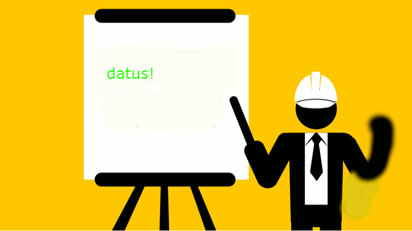

Gada sākumā apguvu attēlu apstrādes programmu GIMP, kurā laboju attēlu defektus un izveidoju animāciju.
Programmā Inkscape veidoju plakātu par personas datiem un logo zālespļāvāja uzņēmumam.

Vietnē clipchamp stundā montēju video ar dotiem video materiāliem, bet mājās pati montēju video par 3D klucīša montēšanu.
Teksta apstrādes tēmā apguvu strādāšanu ar Word, kurā iemācījos tekstu formatēt dažādos veidos.

Apguvu darbošanos ar Excel lietojumprogrammu, kurā formatēju tabulas, atlasīju nepieciešamo informācīju no tabulām.